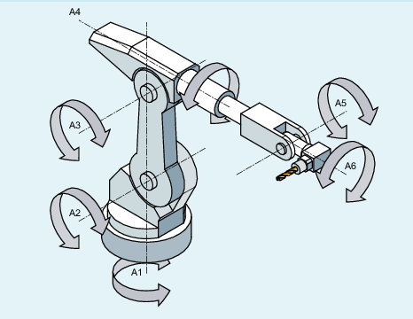
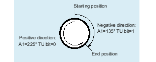

In order that rotary axes can also approach axis angles exceeding +180° or less than -180° without requiring a special traversing strategy (e.g. intermediate point), the sign of the axis angle must be specified under the adjustable address TU.
| Note |
|
The control only takes into account programmed TU values for PTP motion. CP motion is ignored. |
| Adjustable address to specify axis angle signs | |||
| Binary or decimal value For each axis that is involved in the transformation, there is a bit that indicates the sign of the axis angle (θ), and therefore the traversing direction. | |||
Bit | = 0 | Axis angle sign: + | Axis angular range: 0° ≤ θ < 360° | |
= 1 | Axis angle sign: - | Axis angular range: - 360° < θ < 0° | ||
Example: 6-axis articulated robot
Bit | Meaning | Value | Axis angle sign | Axis angle |
|---|---|---|---|---|
Bit 0 1) | Sign for the axis angle of A1 | = 0 | + | ≥ 0° |
= 1 | - | < 0° | ||
Bit 1 1) | Sign for the axis angle of A2 | = 0 | + | ≥ 0° |
= 1 | - | < 0° | ||
Bit 2 1) | Sign for the axis angle of A3 | = 0 | + | ≥ 0° |
= 1 | - | < 0° | ||
Bit 3 1) | Sign for the axis angle of A4 | = 0 | + | ≥ 0° |
= 1 | - | < 0° | ||
Bit 4 1) | Sign for the axis angle of A5 | = 0 | + | ≥ 0° |
= 1 | - | < 0° | ||
Bit 5 1) | Sign for the axis angle of A6 | = 0 | + | ≥ 0° |
= 1 | - | < 0° |
TU=19 (corresponds to TU='B010011) would therefore signify:
Bit | Value | Axis angle | |
0 | = 1 | ⇒ | θA1 <0° |
1 | = 1 | ⇒ | θA2 <0° |
2 | = 0 | ⇒ | θA3 ≥0° |
3 | = 0 | ⇒ | θA4 ≥0° |
4 | = 1 | ⇒ | θA5 <0° |
5 | = 0 | ⇒ | θA6 ≥0° |
| Note |
In the case of axes with a traversing range > ±360°, the axis always moves along the shortest path because the axis position cannot be specified uniquely by the TU information. If no TU is programmed for a position, then depending on MD30455 $MA_MISC_FUNCTION_MASK the shorter or longer path is traversed. |
For PTP travel with TRANSMIT active, the address of TU has no meaning!
The rotary axis position shown in the following diagram can be approached in the negative or positive direction. The angular position is programmed under address A1. The traversing direction is only absolutely clear when TU is specified.
See also:
Activating/deactivating Cartesian PTP travel (PTP, PTPG0, PTPWOC, CP)